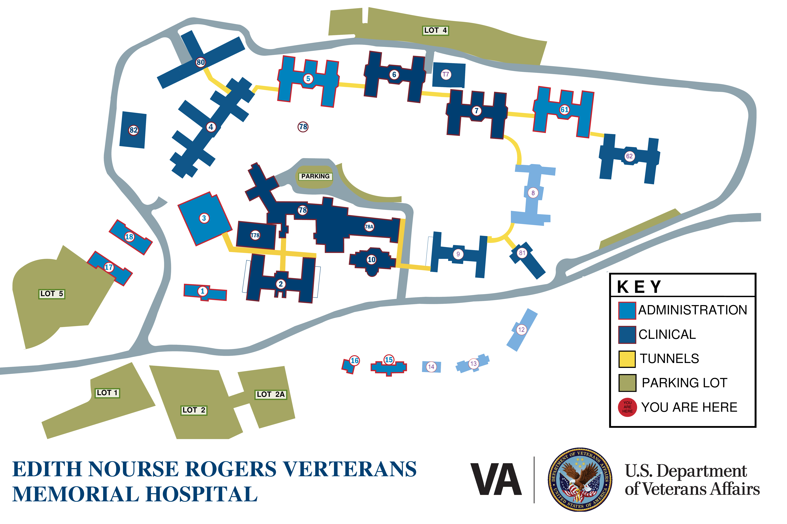

Building Rollup Tiles
Backup selector view from the Excel rollup.
Drop the Excel workbook here to refresh this web view.
Engineering operations workspace powered by the Excel PMIS workbook.

Backup selector view from the Excel rollup.
Auto-built from the loaded workbook. Use this before a status meeting, site walk, or leadership check-in.
Important: use the extracted folder, not the file opened inside the zip preview. Open index.html, then use Load Excel Workbook or drag the workbook onto the page.
Use this as the secondary selector. The campus map remains the primary workspace; this drawer lets you quickly jump to any Excel rollup building.